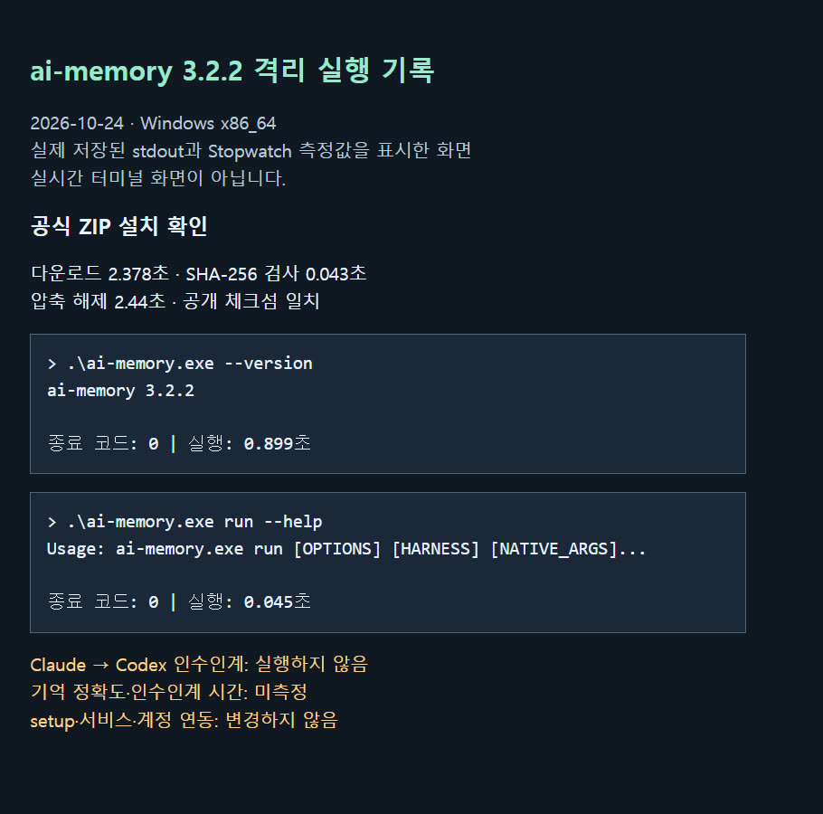
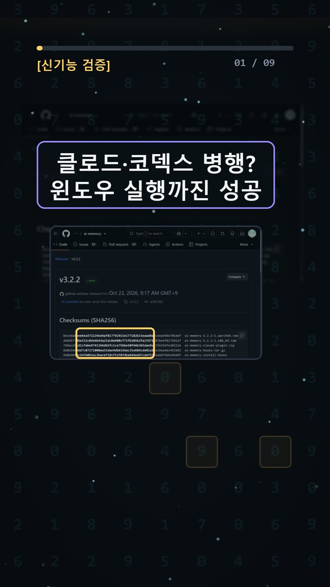
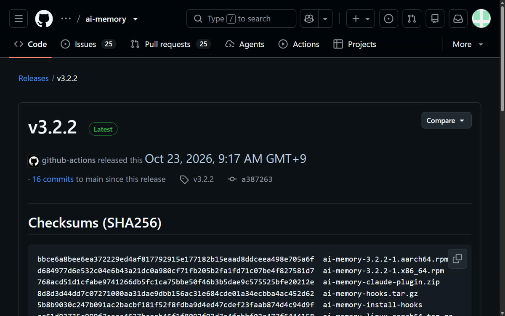
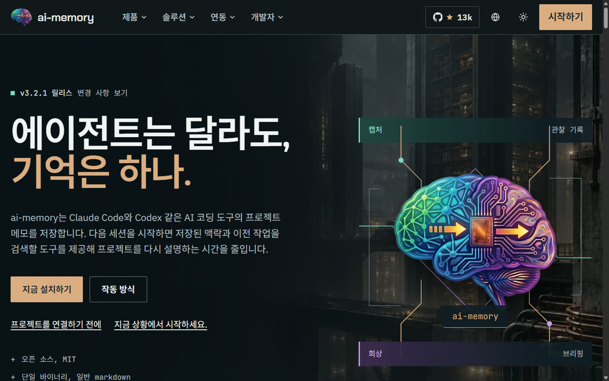

이 포스팅은 쿠팡 파트너스 및 토스쇼핑 쉐어링크 활동의 일환으로, 이에 따른 일정액의 수수료를 제공받습니다.
ai-memory v3.2.2 설치 확인: 클로드 하던 일을 코덱스로 넘길 수 있을까

검증 범위 · 직접 확인 기록 · 이 글은 2026-10-24에 공식 출처를 열어 보고 우리 PC에서 직접 확인한 기록(확인 수준: partial)을 바탕으로 AI 도구와 함께 정리했습니다.
명령어·설정·실패 해결표 바로 보기 (무료 공개)명령어·설정·실패 해결표
| 구분 | 내용 | 해결 |
|---|---|---|
| 명령어 | curl -fsSL https://github.com/akitaonrails/ai-memory/releases/download/v3.2.2/install.sh | AI_MEMORY_VERSION=3.2.2 sh |
한눈에 보기
- ai-memory는 AI 코딩 도구 20개 이상(Claude Code, Codex 등)이 기억 하나를 함께 쓰게 해 주는 무료 오픈소스(MIT)예요. 도구를 바꿀 때마다 하던 일을 다시 설명하는 수고를 줄이는 게 목적이에요.
- 우리는 Windows에서 공식 ZIP 파일을 받았어요. 체크섬이 일치하는 것을 확인했고(체크섬은 파일이 진짜인지 확인하는 지문이에요),
ai-memory 3.2.2버전이 출력되는 것까지 직접 봤어요. - 하지만 핵심 기능인 "Claude Code에서 하던 일을 Codex가 이어받기"는 실행하지 않았어요. 이번 확인 수준은 partial(일부만 확인)이에요.
시작 전에 확인할 것
- 요금: ai-memory 자체는 MIT 라이선스 무료 소프트웨어예요. 공식 사이트에는 가입 절차가 없어요. 공식 설명에 따르면 기본 캡처·검색·인수인계는 LLM 호출이나 모델 API 키(유료 AI를 쓰기 위한 비밀번호 같은 값) 없이 돌아가요. 다만 LLM 통합, 임베딩, 기억 재작성 같은 선택 기능은 별도 제공자 설정을 쓸 수 있어서 "전부 무료"라고 할 수는 없어요.
- 계정: Claude Code나 Codex 같은 코딩 에이전트(코드를 대신 짜 주는 AI 도구)는 각각 계정이나 이용 권한이 필요할 수 있어요. 이번에는 에이전트 요금제와 로그인 상태를 확인하지 않았어요.
- 운영체제: 공식 지원은 Linux, macOS, Windows WSL2(Windows 안에서 돌리는 리눅스 환경)예요. 네이티브 Windows는 Experimental(실험적)로 표기돼 있어요. Windows x86_64용 ZIP 배포 파일은 있어요.
- 개인정보: 실제 회사 코드, 개인정보, 기존 대화 기록은 넣지 마세요. 공식 경고에 따르면 첫 세션에서 최근 로컬 에이전트 이력을 가져올 수 있고, 자격 증명 필터가 민감한 텍스트를 놓칠 수 있으며, 기록이 불완전하거나 오래됐을 수 있어요.
- 버전 표기: 확인 당시 GitHub 릴리스에서는 v3.2.2가 Latest였어요. 그런데 한국어 공식 사이트 배너에는 아직 v3.2.1이 떠 있었어요.

설치 방법
명령어는 터미널(글자로 컴퓨터에 명령하는 검은 창)에 입력해요. Windows에서는 PowerShell이 그 역할을 해요. 아래 1번과 2번 중 자기 환경에 맞는 하나만 고르세요.
1. Windows 경로 (📄 공식 문서 기준, 우리는 실행 안 함)
$env:AI_MEMORY_VERSION='3.2.2'; irm https://github.com/akitaonrails/ai-memory/releases/download/v3.2.2/install.ps1 | iex
- 이게 되면 성공: 공식 Windows 문서 기준으로
%LOCALAPPDATA%\Programs\ai-memory에ai-memory.exe가 설치되고, 사용자 PATH(명령어를 어디서든 부를 수 있게 해 주는 경로 목록)에 추가돼요. 고정된 완료 메시지는 문서에 나와 있지 않아요. - 막히면: 체크섬이 맞지 않으면 설치기가 설치를 거부해요.
2. Linux·macOS·WSL2 경로 (📄 공식 문서 기준, 우리는 실행 안 함)
curl -fsSL https://github.com/akitaonrails/ai-memory/releases/download/v3.2.2/install.sh | AI_MEMORY_VERSION=3.2.2 sh
- 이게 되면 성공:
~/.local/lib/ai-memory에 파일이 풀리고,~/.local/bin/ai-memory가 실행 파일을 가리키는 링크가 돼요. - 막히면: SHA-256 검증에 실패하면 압축을 풀기 전에 멈춰요.
3. 시스템을 바꾸지 않는 확인용 ZIP 방법 (✅ 직접 해 봄)
PATH 등록이나 관리자 권한 없이, 새로 만든 빈 폴더에서만 해 봤어요.
Invoke-WebRequest -Uri https://github.com/akitaonrails/ai-memory/releases/latest/download/ai-memory-windows-x86_64.zip -OutFile .\ai-memory-windows-x86_64.zip Get-FileHash .\ai-memory-windows-x86_64.zip -Algorithm SHA256 Expand-Archive .\ai-memory-windows-x86_64.zip -DestinationPath .\ai-memory-v3.2.2 .\ai-memory-v3.2.2\ai-memory.exe --version
- 이게 보이면 성공:
Get-FileHash결과가 릴리스 페이지에 공개된 SHA-256과 같고,--version을 실행하면ai-memory 3.2.2가 출력돼요. - 막히면: 해시가 다르면 실행하지 마세요. 그리고
latest주소는 그때그때 최신 버전을 받아요. 우리가 받을 때는 최신이 v3.2.2였어요.

사용 방법
이 단계는 전부 📄 공식 문서 기준이고, 우리는 실행하지 않았어요.
1. ai-memory setup --plan을 입력해요. 무엇이 바뀔지 계획만 보여 주고 끝나요. 감지된 에이전트에는 번호와 발견 근거가 붙어요. 파일이나 설정은 바꾸지 않아요. 2. ai-memory setup을 입력해요. 데이터 폴더 생성, 로그온할 때 서버 자동 시작 등록, 에이전트의 MCP(AI 도구가 외부 기능에 연결하는 규격)·훅(특정 순간에 자동으로 실행되는 동작)·스킬 연결을 해요. 변경 계획과 확인 질문이 나오는데, 질문이 보였다고 해서 설정이 끝난 건 아니에요. 3. ai-memory run claude로 Claude Code를 시작해 작업하다가 종료해요. 이 단계 전에 Claude Code와 Codex CLI를 각각 설치하고 로그인해 두어야 해요(이번에는 그 상태를 확인하지 않았어요). 4. 같은 폴더에서 ai-memory run codex를 실행해요. 공식 README에는 이렇게 이어받는 흐름이 나와 있어요. 이 단계의 성공 화면은 우리 확인 기록에 없어요.
주의: ai-memory init은 데이터 폴더만 초기화해요. init만으로는 서버, 훅, MCP 연동이 끝나지 않아요.
우리가 직접 해 본 결과
판정은 partial이에요. 진행한 순서대로 적을게요.
- 고른 이유: 한국 시간 10월 22~23일, 약 23시간 사이에 v3.2.0, v3.2.1, v3.2.2가 연달아 공개됐어요. Claude Code와 Codex를 번갈아 쓸 때 "아까 하던 일"을 다시 설명하는 불편을 줄여 준다는 점도 궁금했어요.
- 원문 확인: GitHub 저장소, 공식 사이트, 릴리스 목록, Windows 문서를 브라우저로 직접 열어 봤어요.
- 다운로드: 2.378초.
- 체크섬 검사: 0.043초. 공개된 SHA-256
84814a55…169b와 일치했어요. ZIP 안 203개 항목에 위험한 경로가 없는지도 검사했고, 모두 통과했어요. - 압축 해제: 2.440초. 여기까지 측정한 구간의 합은 4.861초예요. 사람이 손으로 한 작업과 문서를 읽은 시간은 빠져 있어요.
- 실행:
--version0.899초(종료 코드 0,ai-memory 3.2.2),--help0.049초,run --help0.045초,setup --help0.054초. 네 개 모두 정상 종료됐어요. - 뒷정리: 시험용 프로세스가 0개 남은 것을 확인했어요. PATH, 서비스, 기존 에이전트 설정은 바꾸지 않았어요.
예상과 달랐던 점: 처음 계획은 ai-memory init으로 초기 설정을 하는 것이었어요. 그런데 공식 빠른 설정은 ai-memory setup이었어요. GitHub 버튼에 표시된 별 수(13.1k)와 공식 사이트 표기(12,714)도 서로 달랐어요.
우리는 여기서 막혔어요: install.ps1과 setup은 PATH, 로그온 서버, 에이전트 설정을 바꿀 수 있어서 이번 무인 검증에서는 실행하지 않았어요. 그래서 실제 이어받기, 핵심 3가지가 몇 개 맞는지 매기는 점수, 설치부터 인수인계까지 걸리는 시간은 측정하지 못했어요.
한계도 분명해요. 1회 시도였고, 설치 확인 범위만 해 봤어요.

자주 막히는 곳
- 해시가 다를 때: 실행하지 마세요. 공식 설치기도 설치를 거부해요.
- Windows에서 불안정할 때: 네이티브 Windows는 Experimental이에요. 공식 지원 환경은 WSL2예요.
- init만 했는데 연동이 안 될 때: 연동은
setup이 해요. - 뭐가 바뀔지 불안할 때:
ai-memory setup --plan으로 계획부터 읽어 보세요. - 버전 숫자가 서로 다를 때: GitHub 릴리스 페이지의 Latest 표시를 기준으로 보세요.
이어받기를 직접 확인할 때 체크리스트
1. 가짜 예시 프로젝트 폴더에서만 시험하기 2. 두 번째 도구에게 앞 도구가 한 일과 남은 과제를 설명 없이 말해 보게 하고, 내가 적어 둔 핵심 3가지와 맞춰 보기 3. 중요한 내용은 기억에 맡기지 말고 한 번 더 확인하기(공식 문서도 기록이 불완전할 수 있다고 경고해요)
🧰 오늘의 실험실 생존 세트 — 밤새 실험 돌릴 때 쟁여 두는 것들


정리
ai-memory v3.2.2는 Windows에서 ZIP으로 받아 체크섬을 확인하고 실행하는 데까지는 문제가 없었어요. 하지만 이 도구를 쓰는 진짜 이유인 Claude Code에서 Codex로 이어받는 기능은 아직 확인하지 못했어요. 그래서 "설명 없이 완벽하게 이어졌다"고 말할 수 없어요. 도구마다 연동 수준이 다를 수 있으니, 써 본다면 가짜 폴더에서 직접 확인해 보시길 권해요.
원문 기록은 AI 실험노트에 모아 두었고, 같은 내용을 쇼츠로도 정리했어요.
이 글은 실제 확인 기록을 바탕으로 AI 도구와 함께 정리했어요.
혹시 글에서 틀린 부분이나 고쳐야 할 부분이 보이면 유튜브·스레드 댓글로 알려 주시면 정말 감사하겠습니다. 바로 확인해서 고칠게요!
🛒 다시 보기: 오늘의 생존 세트
🎙️ AI 음성이 궁금하다면
우리 채널 내레이션은 타입캐스트를 쓰지만, 영어·다국어 AI 음성을 실험해 보고 싶다면 ElevenLabs도 많이 쓰여요.
[광고·제휴] ElevenLabs 둘러보기🎬 쇼츠로 다시 보기 · 🧵 함께 이야기하기
🧵 스레드 @alligatorxor에서 오늘 실험 이야기 나누기 · ▶ 유튜브 새AI실험노트 다른 쇼츠 보기 · 📒 실험노트 홈